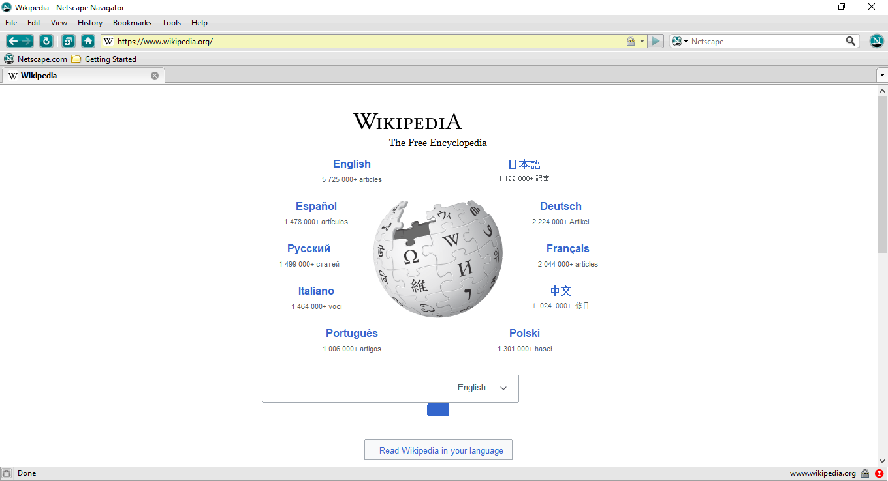
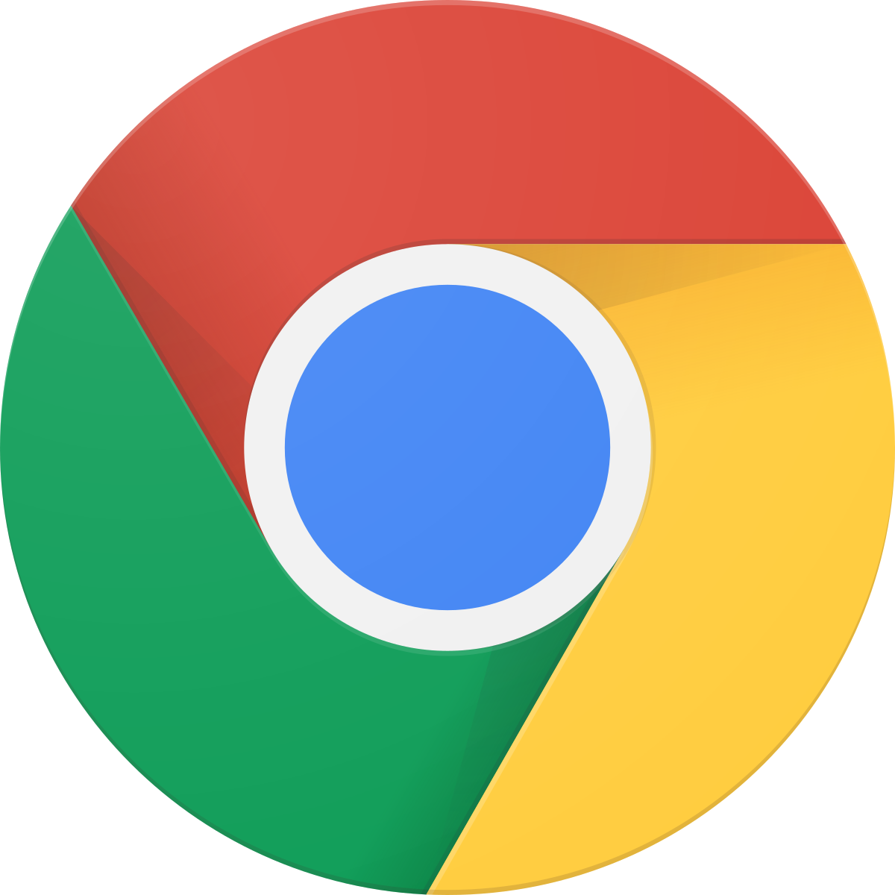
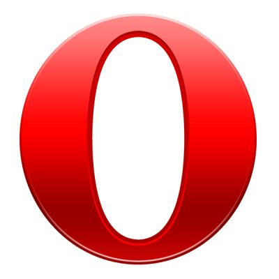
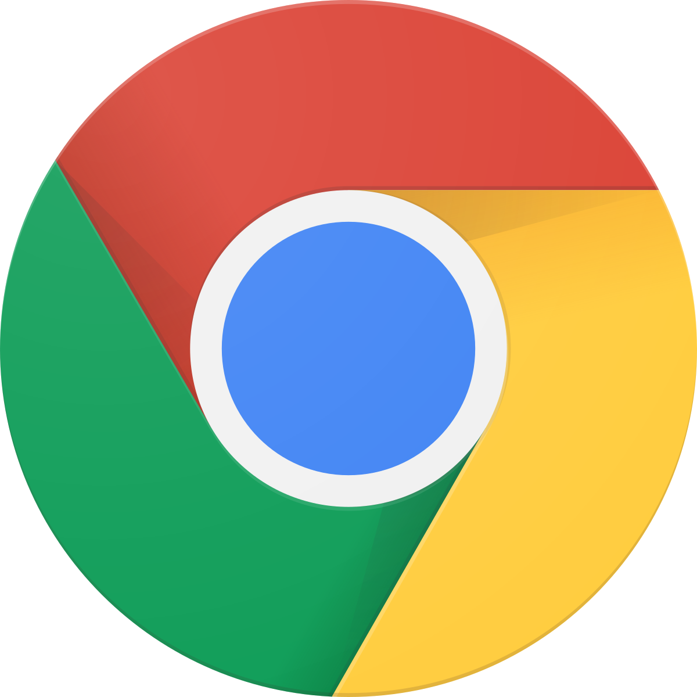
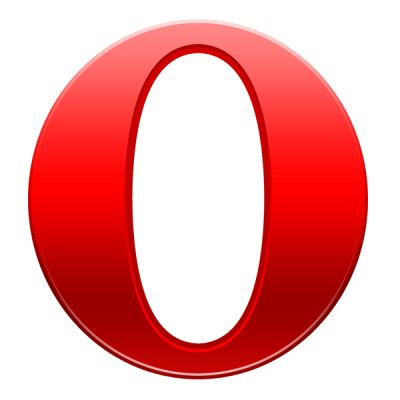

Celui-ci et le navigateur "NCSA Mosaic" fut les deux navigateurs les plus populaires pendant les années 90.
Mais avant Mosaic et Netscape, il y avait le WorldWideWeb... Le premier navigateur internet, qui a été développé par Tim Berners-Lee, en octobre 1990.
Il était en mode graphique, c'est-à-dire dire qu'il était constitué de pixel, au lieu de caractères ASCII. On pouvait leur donner des couleurs respectives et donc colorier, dessiner ce qui n'était pas possible avant avec l'ascii.


Revenons à Netscape Navigator. Il a été créé en 1994, édité par la société Netscape Communications, du groupe Time Warmer.
Il est a l'origine de Mozilla Firefox, navigateur encore en dévoloppement
Dés 1995, il devient le navigateur dominant avec son interface moderne, mais Netscape commencera a arrêter son développement dès que Microsoft a publié "Internet Explorer"

À partir de 2000, la "Guerre des Navigateurs" commence, il opposera Internet Explorer, Mozilla Firefox et Google Chrome
C'est Google Chrome qui en sortira vainqueur, avec un total de plus d'1 milliard d'utilisateurs (ce qui était énorme pour son temps !)
A partie de Google Chrome, des dizaines de navigateurs ont été créés, comme Opera, Safari d'Apple, le navigateur Nintendo DS et bien plus encore !
Les navigateurs ne cessent de se développer, et c'est ce qui fait la beauté d'internet !

 
